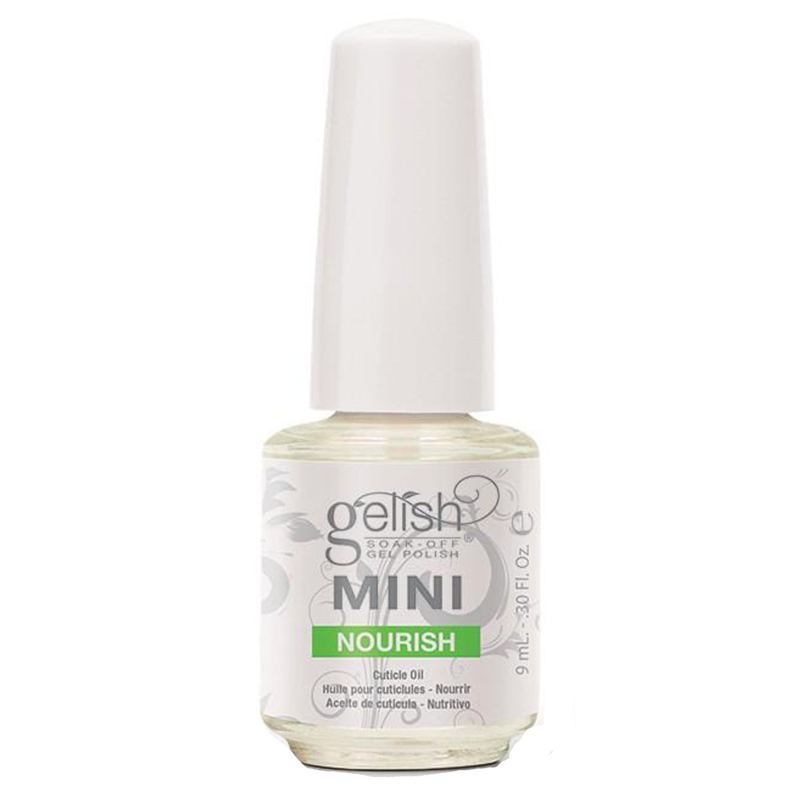

Mini Nourish
Hidratante de cuticulas

Mini Nourish
$250.00
Gelish Nourish Cuticle Oil Rehydrates and restores essential oils in cuticles and skin surrounding the nail with a unique blend of Grapeseed Oil, Kukui Nut Oil, Sesame & Vitamin E. The purpose of this gel is to hydrate teh skin surrounding the nails and cuticles. It also leaves your nails and cutciles smelling great with a great scent. Gelish Soak-Off Gel Polish applies like polish and cures in a LED lamp in 30 seconds, or 2 minutes in traditional UV lamps. Gelish stays on nails for up to 3 weeks with no chipping or peeling, and soaks completely off in only 10 - 15 minutes. 1 Buy = 1 Bottle
Mayelin Nails and Bar
© 2019 All rights reserved. Design by Joel Hernandez